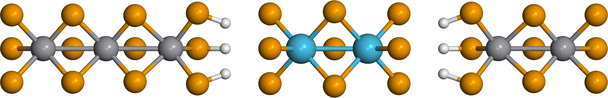
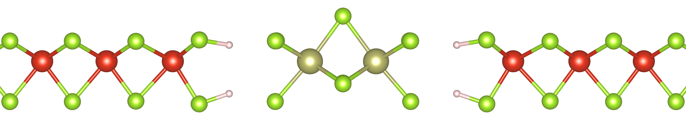
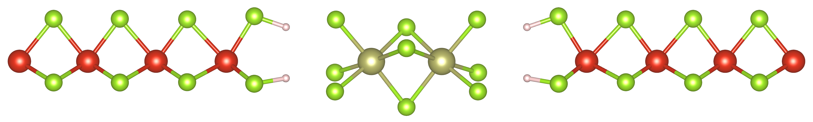
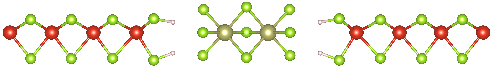
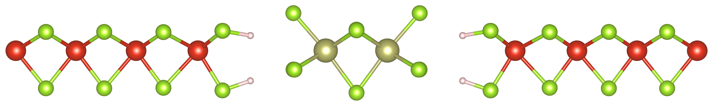
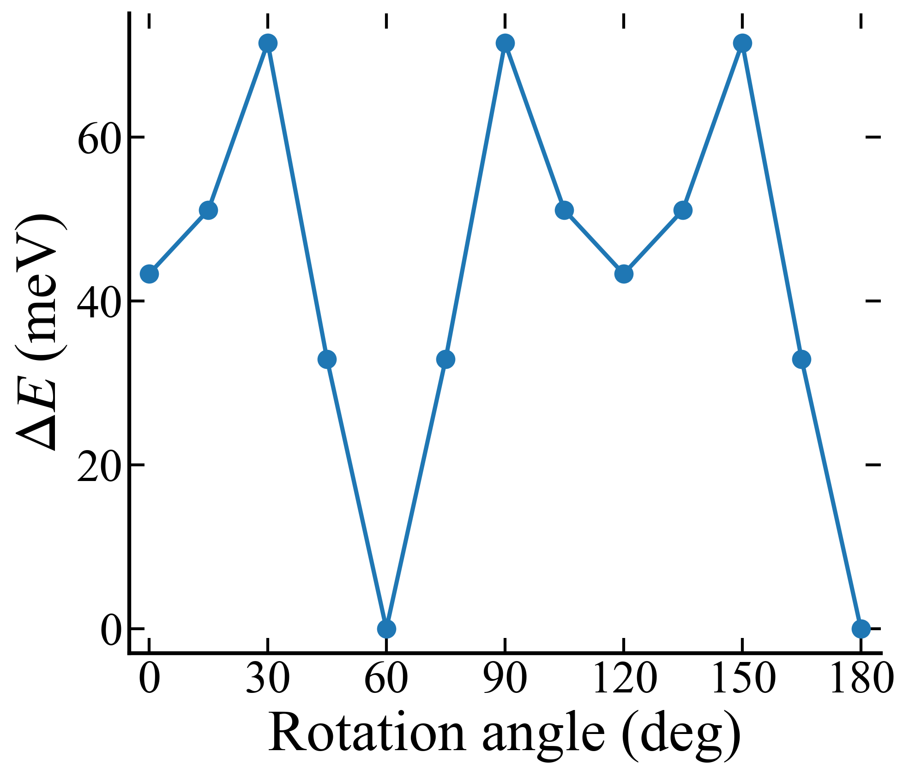
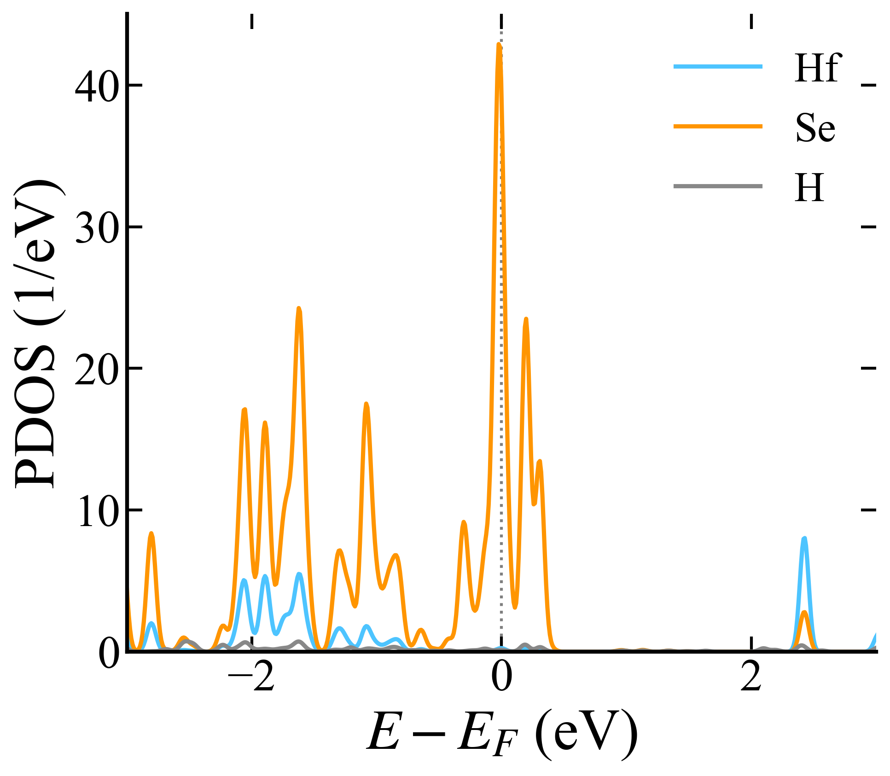

05. Junction structure — 60° staggered, length-converged
Goal
Build a relaxed, converged scattering region: how the molecule sits between the chains (orientation, separation) and how much VSe₃ buffer the transport needs.
Method
SIESTA, vdW-DF2; H-passivated interface; orientation and lateral spacing relaxed; scattering-region buffer scanned 3→5→7→9 unit cells per side.
Result

Interactive (drag to rotate, scroll to zoom) — the same relaxed 60° structure:
- Dispersion correction: PBE+D2 was anomalously unstable for the Hf₂Se₉ relaxation; vdW-DF2 (production) and PBE-D3 (side check) both converge.
- Orientation: 60° staggered registry favoured by 43.3 meV (angle and lateral spacing both relaxed); H-passivation minimum at d ≈ 3.5 Å.
- Length convergence: the molecule–lead end gap settles once the VSe₃ buffer reaches 9 unit cells per electrode — 3.633 → 3.583 → 3.575 → 3.576 Å (increments 50 → 8 → 1 mÅ), and $T(E_F)$ is unchanged between 3 and 9 unit cells per electrode (0.354 vs 0.348).
| VSe₃ unit cells per electrode | 3 | 5 | 7 | 9 |
|---|---|---|---|---|
| molecule–lead end gap (Å) | 3.633 | 3.583 | 3.575 | 3.576 |
Interface rotation
The central Hf₂Se₉ was rotated in 15° increments (0°–180°). ΔE minimises at 60° and 180°; the 60° staggered registry is 43.3 meV more stable than 0° (Se-aligned).




The same relaxed structures, interactive (drag to rotate, scroll to zoom):

Molecular PDOS
This PDOS is for the 60° (staggered) junction — the most stable registry. Its structure (the same one rotated to 60°):

Discussion
The device geometry is settled, so transmission differences come from electronic structure, not an under-converged cell. Per advisor request the production transport is being re-run on a structure relaxed with 9 VSe₃ unit cells per electrode (electrode-only extension) as a final check.